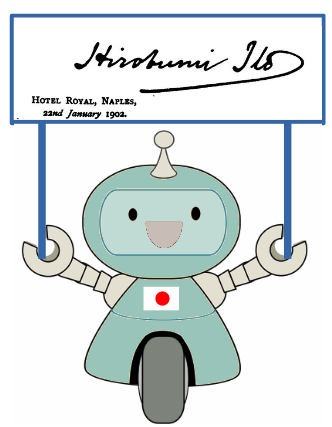

アルフレッド・ステッド(Alfred William Stead )小伝 - 渋沢栄一など¶
アルフレッド・ステッドの新婚旅行¶
アルフレッド・ステッドは日露戦争当時の数少ない日本通の英国人ジャーナリストであり、日本を紹介する著作や、日本をめぐる時事論を残している。しかし、我が国ではほとんど忘れられた存在のように見える。英国等の学術論文で言及されることがあっても、無批判なJapanophile（日本贔屓）として紹介されるなど、好意的に扱われることは少ない。したがって、彼の経歴をくわしく追ったものも見当たらない 1 。
そこで、当時の英米の新聞・雑誌や、英国外務省の交信録などに散らばっている情報を集めてみると、ずいぶん波乱に富んだ人生を送った人で、長生きして回想記でも残してくれていたら、知られていない歴史の裏話が読めたのではないかと思う。彼はその遍歴のなかで、いつも英国が次の手を打つべき場所に先に出て行っているようなところもあり、見ようによっては諜報活動にかかわっていたようでもある。
彼は1877年英国ダーリントン生、1933年ドイツのドレスデンで亡くなっている。彼の父親の William T. Stead は、大英帝国で最も著名なジャーナリストといわれ、ジャーナリズムが政治に大きく影響する先駆けになった人物である。
アルフレッド・ステッドの日本との関係は1900年以前に始まるが、正確にいつからかははっきりしない。彼の最初の主著"China and her mysteries"(London, 1901) には林駐英公使の序文(1900年11月1日付)がある。林
同書中で日本への言及は少ないが、日清戦争後の三国干渉の帰結について、ステッドは次のように書いている。
Thus we see that the possession of Port Arthur by Russia brings
matters between that country and Japan; into a very critical state.
Korea is the key to both countries, — speaking, of course, of
Russia's Far Eastern possessions, — and each nation sits watching,
watching, until such a moment as the other shall make a motion
towards Korea. Then there will be war, and the Chinaman will smile
pityingly at the foolishness of these barbarians, and will count
up the gains likely to accrue to himself.
かくてロシアが旅順を手に入れたことで、同国と日本との関係はきわめて
危機的な状況に陥った。両国にとって韓国が鍵である - もちろんロシアの極
東利権のことを言っているのだが - 互いに相手が韓国に向けて動き出すその
瞬間まで、ひたすら注視し続けている。どちらかが動いたその時こそ戦争に
なる。そのとき、中国人は彼等蛮族の愚かさにほくそ笑み、たなぼたの利益に
あずかることを期待するのだろう。
ここで「韓国が鍵」と言っているのは、後の 「韓国問題」(1903) の論考につながっていく。
同じ年、アルフレッド・ステッドとインディアナポリスの令嬢 Mary Ellaine Hussey との結婚式を予告する米紙の記事(1901年3月2日付)では、彼はそれ以前に一度、英国政府の特命をもって日本を訪れたことになっている。しかし、この記事はステッドの年齢を大きく違えていたりで、正確性は保証できない 3 。新婚旅行には日本に行くと書かれており、これはそのとおりに実現した。
1901年、アルフレッド・ステッドは父親の主宰する"The Review of Reviews"の記者として新婚旅行がてら来日し、林駐英公使の紹介状をもって渋沢栄一を訪問した 4 。彼が日本の指導者層に広く面識を得たのには、林の紹介以外に、少なからず渋沢が与っていたようである。渋沢はステッドを連れて大隈重信や井上馨を訪問したり、帝国ホテルで近藤廉平(日本郵船社長)とともにステッド紹介の小宴を開いたりしている 5 。
1901年7月末、ステッド夫妻は日本から旅順に行き、東清鉄道開設で シベリア鉄道 とつながったばかりの大陸横断鉄道の旅に出る。東清鉄道はロシア軍政下にあってまだ一般には開放されていなかったので、欧米の民間人としてはおそらく初めての旅客だったろう。アルフレッド・ステッドが行く先々で特別扱いされているのは、父親の威光だろうか。いずれにしても、この旅のあいだ、彼は前途に明るく大きな世界が広がっているのを感じていたにちがいない。
旅の前半、ハルビンで彼は旧知のパーヴェル・レサールと出会って、旅の情報を交換している 6 。レサールは駐清全権公使に任命されて、北京に向かう途中だった。全権公使としてのレサールは、満州還付条約をまとめ、さらに日本との衝突回避に心血を注ぐ。彼の認識では、ロシアが極東に領土を拡張しようとするのは破滅的な試みであった [Oze] 。
1903年にレサールは英国との協調によってロシア、中央アジア経由でインドにいたる鉄路を建設すべきことを建言した [White] 。ロシアにとっての真の敵と見なしていたドイツがバグダッド路線を建設しようとしているのに対抗して、その意義を半減させ、また、英国との関係を修復しようという提案である。彼の意見は、おなじく対英協調を探っていたウィッテやクロパトキン陸相に好意的に受けとめられた。が、ニコライ二世はすでに彼等を疎み始めており、この案を黙殺した。極東でもレサールの努力はばらばらのロシア外交のなかで実ることなく、彼は失意のうちに1905年4月、日露戦争の帰結を見ないまま北京で亡くなる。
しかし、このときステッドはそんな運命を予測できるわけもなく、鉄道土木にくわしいレサールからペテルブルク-ハルビンの鉄道旅程は今回は19日半かかったが、二年後には北京-ペテルブルクを14日間で行けるようになるだろうといった話を聞いて、ロシアの努力のおかげで地球がずいぶん小さくなるものだといった呑気な感想を記している。
{kind=link}
1902年日英同盟締結を待って出された、アルフレッド・ステッドの著作"Japan, our new ally" 7 には、伊藤博文が序文を書き、付録に日英同盟条文とランズダウン外相が駐日イギリス公使マクドナルドに同盟内容を説明する手紙がのせられている。序文には、1902年1月22日、ナポリのHotel Royalでの伊藤の署名が付く。伊藤は1901年9月からの海外巡遊を終え、この翌日にナポリから乗船帰国の途についた 8 。
次いで1904年、彼はロンドンのHeinemann社から、 "Japan by the Japanese" という編著を出した。同書は"Unser Vaterland Japan"のタイトルで同年に独訳されるなど、七カ国語に訳された。
この本がユニークなのは、彼の依頼によって、日本の政治、文化を紹介する各章を三宮義胤、伊藤博文、山形有朋、金子堅太郎、大山 巌、斎藤 実、有賀長雄、澤柳政太郎、大隈重信、末松謙澄、新渡戸稲造、穂積 陳重、井上 馨、松方正義、渋沢栄一、他のそうそうたる顔ぶれが分担執筆者として名を連ねているところにある。といっても、第三章、伊藤博文"The Constituion of the Empire"が、大日本帝国憲法義解の英訳(1889) 9 の再録であるように、多くはすでにどこかで発表、公刊されたものをまとめたり、少し手を加えたもののようである。完成まで、渋沢の女婿で大蔵官僚の阪谷芳郎(1863-1941)や、井上馨の女婿で貴族院議員の都筑馨六(1861-1923)などが協力した。
渋沢は同書の第17章「商業及び産業」の「I. 産業界の概況」、「II. 産業・金融システム」を分担している。前者は明治35年(1902)欧米巡遊から帰朝後の東京商業会議所での演説 10 から要点をまとめたもののように見える。
ステッドはさらに、1906年には"Great Japan A Study Of National Efficiency"を第5代ローズベリー伯爵の序文付きで出版し、これも当時の英国でかなり反響があった。
想像だが、父親の七光で貴顕に近づき、その序文を得て自著の宣伝に使うといったやり方に、反感を持たれることもあったのではないか。内田魯庵は「貘の舌」(大正14)のなかで、アルフレッド・ステッドを「小ステッド」と呼び、その日本に関する著述をあまり好感をもっては扱っていない。
バルカン情勢¶
しかし、必ずしも損得勘定だけの人間でなかったことは、この後、彼のバルカン諸国へののめり込み方から感じられる。
1905年以降、アルフレッド・ステッドの日本とのかかわりは薄れていってしまう。彼は日本訪問の後、東欧、バルカンを旅したのをきっかけとして、ルーマニア 11 やセルビアなどバルカン諸国に力を入れるようになる。日本のときと同じで、この先、彼がこれらの国について何か書くときは、強い想いが入ってしまう。それが、しばしば情況判断を誤る原因ともなった。
1907年には、ルーマニアのロンドン総領事として雇われる。ルーマニアでは1907年に大規模な農民の反乱があり、反乱勢力と政府側と双方の残虐行為が英国内で大きく取り上げられた。ステッドの仕事は、地に落ちた同国のイメージを回復するための広報に手を貸すことだった [Dunlop20] 。彼は、ルーマニアの西欧文化とのつながりを強調すること、農業国としての将来性を描くことで、バルカンのともすると暗いイメージから同国の印象を引き離す広報戦略をとった。
だが、彼のバルカンへのかかわりはさらに広い。1909年には"Servia by the Servians"という編著を、これもHeinemannから出している。この本は当時のセルビアの状況を調べるうえでの参考書として今日も利用されている。これが確認できた限り、まとまったものとしては彼の最後の編著である。
1912年、父ウィリアム・ステッドはアメリカのタフト大統領の招待で米国に向かうためにタイタニックに乗船し、同船遭難で命を落とした。父の死後、アルフレッドが"Review of Reviews"を継ぎ、編集長として手腕を発揮した。しかし、父親の生前にすでに同誌の経営は傾いており、1917年には他社に売却することになる。
1914年7月28日、オーストリアがセルビアに宣戦布告して第一次世界大戦が勃発した。9月、彼は"The Doom of Austria"と題した記事を配信した 12 。この宣戦布告により、欧州が東欧の運命を決めた時代は終わり、東欧の小国群が欧州の命運を決めるようになると書いた。一方、その後のバルカン地域の戦局については、このときのみならず、この後も読みあやまり続ける。
彼は"Review of Reviews"の編集責任を妹のエステルにまかせ、Daily Express特派員として戦線におもむいた。10月にはベルギーから、ドイツ小銃の貫通力のすさまじさを伝えている。
1915年6月30日夜、彼はルーマニア(当時はまだ参戦していない)のブカレストでドイツ人に襲われて、重傷を負った 13 。しかし、傷の回復は早かったようで、同年秋には、セルビアに派遣されていた英海軍特別部隊において、アーネスト・トラウブリッジ卿のスタッフとして軍務についている 14 。
1915年10月ブルガリアがセルビアに侵攻し、セルビア軍とトラウブリッジの特別部隊はアドリア海岸まで逃走した。ステッドはこの退避作戦で主要な役割を果たしたようである。戦後、1918年12月に"The American Review of Reviews"に"The Glory that is Serbia" をLiutenant Colonal (中佐) の肩書で寄稿した 15 。セルビア敗走の経験を記し、戦後のセルビア復興への助力を呼びかけた。記事の前書では、彼は戦後もセルビアにとどまっていると書かれている。
戦後、アルフレッド・ステッドは東欧諸国との人脈をいかして、ジャーナリストというより、ますますフィクサー的な活動をするようになっていった。
第一次大戦後、戦勝国側はドナウ水運管理のために、Inter-Allied Danube Commission 16 を設立した。同委員会を率いたのはセルビアで上官だったトラウブリッジ卿であり、ステッドは事務局長についた。さらに、1920年春、英国とハンガリーがAngol-Magyar銀行を設立したときには、ステッドが交渉を媒ちした [Magyarics] 。後の死亡記事の略歴(下記)を見るに、このあたりが、表に出せるかぎりでの彼の経歴のピークだろうか。
1926年(大正15)4月、彼は映画撮影技師二名とともに来日した。渋沢を訪問し、日本産業を紹介する映画の構想などを話した。渋沢は25年ぶりの彼の訪問をよろこび、飛鳥山邸で午餐会をもよおした。(これを最後にステッドの日本との関係はたどることができなかった。)
このとき彼は欧州での連絡先として、チェコスロバキア日本大使館気附としてくれるよう、渋沢に伝えた。1920年代、彼は欧州復興のためには域内の交通の便を向上すべきことを説いていた。ロンドン-プラハ間の民間航空路線開設に向けても活動していたが、ドイツの強い反対などがあり、なかなか実現しなかった [Higham] 。
1926年12月20日(月)、英国地方紙に、こんな記事が現れた 17 。
故W.T.ステッドの子息にS.O.S放送
彼の娘がナポリで危篤となり、前週の土曜日夜に彼の連絡先を求める緊急ラジオ放送が流された。19日になって彼の三人の友人からブカレストの住所が伝えられ、すぐにその宛先に電報が送られたが、彼からの返信はまだない、とのことである。このときステッドに連絡がついたのかどうかは分からないが、彼の娘はなんとか危機を脱したらしい。
この頃、第一次大戦後にできた「セルビア人・クロアチア人・スロベニア人王国」はクロアチアの分離独立運動などで分裂の危機にあった。1929年1月、統一を保つためにアレクサンダー国王は独裁制をしき、国名をユーゴスラビア王国と改めた。この前後、ステッドはユーゴスラビア情勢についての解説をいくつか配信している。
英米の新聞でたどれた消息としては、これら一連の記事のあと1933年9月の訃報まで何もない。
1933年9月19日、ステッドの訃報が英国圏の新聞に載った。偉大なW.T.ステッドの三男アルフレッド・ステッド(C.M.G. 18 ) がドレスデンで亡くなった、享年56歳、というものである。彼の紹介にはいつも偉大な父の名前が出され、訃報にまでついてまわったのは少し気の毒である。ごく短い略歴が添えられている。
1912-13 "Review of Reviews"編集長
1907-11 ルーマニアのための総領事
1919 ドナウ川国際委員会事務局長
彼はドレスデンの病院で9月13日に病死したとのことだが、前後の詳細は分からない。この年、1月30日ヒトラーがドイツ首相となり、3月ダッハウ強制収容所が開設、4月ゲシュタポ創設、7月東欧ユダヤ人移民の市民権剥奪と進んだ。そして、9月初めにはドレスデンでナチスの大規模集会が開かれていた。この時機、ルーマニアでは反ユダヤ勢力が台頭し、やがてドイツに接近していくことになる。親仏だったチェコスロバキアはロシアに傾いていく。ユーゴスラビアは統一を保っていたが、分裂の危機は少しも去っていなかった。ルーマニア、バルカン諸国、東欧に肩入れしながらも、つねに英国の利益に沿って行動していたはずのステッドは、このころ誰のためにどんな活動をしていて、ドレスデンを訪れたのだろうか。
彼が満州事変をどう見ていたかも興味があり、記事を探したが見つからなかった。
メアリー・エレイン・ステッド¶
彼と新婚旅行で来日したMary Elaineは、米国インディアナ州の裕福なHussey家の娘である。美貌で知られ、社交界の花だった。彼女は、1900年万国博に米国女性代表として出席したMay Wright Sewall 19 に連れられてパリに行った。パリでのペルシア王をもてなす晩餐会で、アルフレッドと顔を合わせ、二人は恋に落ちた 20 。結婚後、1904-1909の間に一男二女をもうけている。ロンドンで彼女の「月曜」サロンは多くの外交官、政治家を引き寄せたと言われる。二人の別居は第一次大戦にアルフレッドが従軍したあたりからだろうか。彼女は1929年にウガンダに農園を購入して、その経営にあたり、1957年に同国で亡くなっている。アルフレッドが死んだとき、その意志にしたがって、彼女が遺灰を英国に送ったという [Eckley] 。
2024年4月18日
- 1
"Who Was Who 1920-1940, Vol.3"に短い略歴があるのみである。
- 2
上記"Who Was Who"などには、「ハーグ万国平和会議に参加」とされているが、プロシーディングス [Hag] の人名表には載っていないので、英政府事務局員あるいは報道関係者としての参加であろう。
- 3
The Desert News, March 2, 1901: "The Beautiful American".
- 4
林董と渋沢との関係は、NHK「青天を衝け」で広く知られるようになったので、ここには記さない。
- 5
デジタル版『渋沢栄一伝記資料』、第25巻(DK250078k)
- 6
Pavel Mikhailovich Lessar (1851-1905). Paul Lessarとして知られる。エンジニア、地理学者としての側面も持ち、Geographical JournalにPaul Lessarの追悼文が掲載された。アルフレッドとレサールは、レサールのロンドン駐在時代に父ステッドの関係で知り合ったのであろう。
- 7
同書は"Japan To-day"のタイトルでも出版されている。
- 8
この海外巡遊での伊藤の最大の目的は、ロシアを訪問して新たな日露協約を実現することにあった。しかし、ロシア宮廷内政治、日英同盟を進める桂内閣からの強い制約もあり、成果を得ることなく終わった。一方、その帰途12月24日から二週間のロンドン滞在では、国王との二度の謁見を含む異例ともいえるほどの歓待を受けた [Kimi00] 。日英同盟は伊藤の帰国後、1902年（明治35年）1月30日、英国で調印された。
- 9
”Commentaries on the Constitution of the Empire of Japan by Count Hirobumi Ito; translated by Miyoji Ito”（Tokyo:Igirisu-Horitsu Gakko, 1889）
- 10
- 11
ドナウ川の北に位置するルーマニアは時と状況によってバルカン諸国に数えられたり、別に見られたりする。同国は、バルカン、東ヨーロッパ、ラテン系など、さまざまな捉え方がされる。ステッドが関わった頃のルーマニアは封建的な独立王国だった。
- 12
Oamaru Mail, Volume XXXIX, Issue 12350, 28 September 1914, Page 8, https://paperspast.natlib.govt.nz/newspapers/OAM19140928.2.39
- 13
Feilding Star, Volume XI, Issue 2813, 13 September 1915, Page 4.
- 14
トラウブリッジは日露戦争のときの英海軍アタッシェである。トラウブリッジにとって、英軍アタッシェとしての日露海戦の経験が、これに先立つ地中海での英独海戦の指揮に役立ったとも言えるし、重要なタイミングで敵艦隊を取り逃がす迷いの原因ともなった。
- 15
英国のThe Review of Reviewsには1919年1月に同じ記事が掲載されている。
- 16
Commandement de la Navigation du Danube.
- 17
- 18
C.M.G. : "Call Me God". Companion of the Most Distinguished Order of St Michael and St George.
- 19
May Wright Sewall (1844 – 1920) は米国の女権活動家。インディアナポリスで女学校を経営しており、Hussey家とはそのつながりと思われる。渋沢が1902年に米国を訪れたとき、アルフレッド・ステッドがSewall女史に宛て、渋沢夫妻がシカゴに寄るはずだから、渋沢兼子と会うと良いと勧める手紙が残っている。
- 20
The St. Louis Republic, “Shah of Persia Was Responsible for This Anglo-American Alliance”, February 24, 1901.
- Hag
"THE PROCEEDINGS OF THE HAGUE PEACE CONFERENCES - Translation of the Official Texts: The Conference of 1899", OXFORD UNIVERSITY PRESS AMERICAN BRANCH, 1920.
- Kimi00
君塚直隆、伊藤博文のロシア訪問と日英同盟 : イギリス政府首脳部の対応を中心に、神奈川県立外語短期大学紀要、2000 年 23 巻 p. 33-48 、https://doi.org/10.20686/tgkt.23.0_33
- Dunlop20
DUNLOP, Tessa (2020). Representations of Romania in British Public and Political Discourse, 1907–1919. Doctoral, Sheffield Hallam University. https://doi.org/10.7190/shu-thesis-00388
- Magyarics
Tamás Magyarics, Balancing in Central Europe: Great Britain and Hungary in the 1920s, E-International Relations, ISSN 2053-8626.
- Higham
Robin Higham, Britain's Imperial Air Routes 1918-1939, Fonthill Media (2016/10/27)
- Eckley
Grace Eckley, Maiden Tribute: A Life of W.T. Stead, Xlibris, 2007
- Oze
И. Озерянская, П. М. Лессар - инженер, исследователь, дипломат. http://www.history.odessa.ua/partners.htm
- White
John Albert White, "Transition to Global Rivalry: Alliance Diplomacy and the Quadruple Entente, 1895–1907", June 2002.